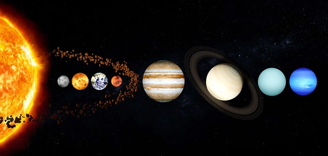

Föoldal |
Képlinkh |
Listák |
órarend |
Téma |
A Naprendszer bolygói
Bemutatás

A Naprendszert Tejútrendszer nevű galaxis egyik spirálkarjában található.
A Nap egy teljes kört nagyjából 240–250 millió év alatt tesz meg a Tejútrendszer magja körül.
Érdekességek
Tudj meg többet!
Jellemzők
Keringési sík (Ekliptika): A bolygók közel azonos síkban (az ún. ekliptika síkjában) keringenek a Nap körül.
Keringési irány: Minden nagybolygó azonos irányban, az északi pólus felől nézve az óramutató járásával ellentétesen kering a Nap körül.
Pályaalak: A bolygók pályája enyhén elnyúlt ellipszis, amelynek egyik gyújtópontjában a Nap áll (Kepler I. törvénye).
Adatok
Bolygó
Hanyadik a naptol?
Van-e hóldja?
A Neptunusz
A Neptunusz a Naptól számítva a nyolcadik
jelenleg 14 ismert holdja van
Rangsor!
Jupiter
Szaturnusz
Uránusz